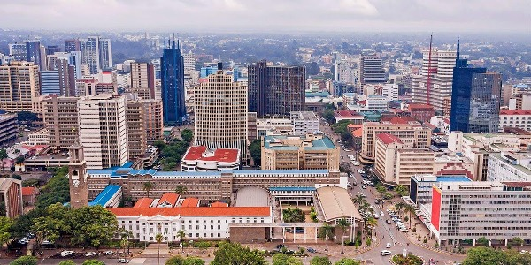

Столиця Боствани
Ґабороне є політичним, економічним та культурним центром країни. Його багата історія та архітектура приваблюють туристів з усього світу. Відвідувачі можуть насолодитися великою кількістю музеїв, галерей, ресторанів та інших розважальних закладів. Місто Боствана пропонує безліч можливостей для цікавого відпочинку та незабутніх вражень.
